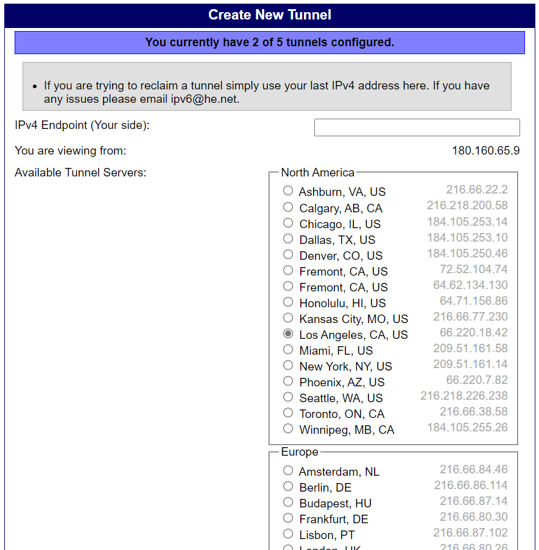

《关于我第一次使用6in4配IPv6搞了两个小时这件事》
开学真爽
事情是这样的。
上回说到家里移动老贼没给公网IP，于是乎只能用IPv6做穿透。开学之后发现，学校里面貌似没有IPv6（吐槽一句，都1202年了还不给IPv6 orz），所以家里的服务器只能吃灰。
于是打算找个方法整个IPv6。
去年就已经打过电话给运营商了，结果毋需多言了。
然后 就开始捣鼓隧道了......
鉴于Test-ipv6的作者说他讨厌6to4，这次学习了Hurricane Electric的使用。
以下为简单目录
1. 6in4以及简单介绍
2. Hurricane Electric注册和申请
3. 本地配置(NAT)
4. 删除
胡言乱语
6in4以及简单介绍
6in4是一种IPv6转换传送机制，是将IPv6的数据包直接封装在IPv4数据包中，通过IPv4链路一条明确配置的隧道中进行传送，相应定义在RFC 4213中（废除自RFC 2893和RFC 1933）。
当 6in4 穿隧中的一端是在网上地址转换之后，在某些情况下用户能使用DMZ。这些网上地址转换路由路会传递所有进入的协议号为41的IPv4包转发到指定DMZ主机上，并使得隧道得以运作。
有些网上地址转换设备甚至允许 6in4 的转换运算。
摘自百度百科 6in4_百度百科 (baidu.com)
和6to4的区别
虽然名字相似、封装方法相同，6to4是将终端的IPv4地址嵌入到其IPv6地址，代替使用手工配置隧道终端信息，从而实现自动传输，而6over4则将IPv4基础网络视为数据链路层，通过特定的多播地址在IPv4网络进行多播来传输。ISATAP也同样使用相同的协议号和封装方法来封装数据包。
摘自百度百科 6in4_百度百科 (baidu.com)
Hurricane Electric注册和申请
需要注意的是，HE是基于已经有公网IPv4（动态静态皆可）的。如果公网IPv4也没有的话，建议摆烂。
HE的注册很简单,主页左边的登录框下面有Register按钮,按照提示填写信息,邮箱验证之后即可直接登录。
登录完成后，点击左下角User Functions中的Create Regular Tunnel。

IPv4 Endpoint(Your side): 既是填写你的公网IP，通常是下面显示的那个。如果红色报错，可能是由于防火墙或者是映射问题，可以尝试设置NAT或者DMZ主机解决。
节点一般自动选择的是延迟最低的，如果发现有延迟更低的可以选择其他选项。 填写完毕后往下拉，点击Create Tunnel。进入新的页面后点击中间的的Example Configurations,在下面的下拉菜单中选择自己使用的系统。（这里以Win10举例。P.S.:其实我用的是Win11，但是无伤大雅）

将框内指令复制下来。
1netsh interface teredo set state disabled2netsh interface ipv6 add v6v4tunnel interface=IP6Tunnel localaddress=180.160.65.9 remoteaddress=66.220.18.423netsh interface ipv6 add address interface=IP6Tunnel address=2001:xxx:xxxx:xxxx::24netsh interface ipv6 add route prefix=::/0 interface=IP6Tunnel nexthop=2001:xxxx:xxxx:xxxx::1此处注意！如果你并非直接公网IP接电脑上的（也就是说是通过路由器NAT上网的），那么这里需要把第二行中的
localaddress=xxx.xxx.xxx.xxx
修改为你的局域网IP地址（通常为192.168.xxx.xxx，可以通过cmd ipconfig查看）
比如我是
xxxxxxxxxx41netsh interface teredo set state disabled2netsh interface ipv6 add v6v4tunnel interface=IP6Tunnel localaddress=192.168.3.32 remoteaddress=66.220.18.423netsh interface ipv6 add address interface=IP6Tunnel address=2001:xxx:xxxx:xxxx::24netsh interface ipv6 add route prefix=::/0 interface=IP6Tunnel nexthop=2001:xxxx:xxxx:xxxx::1修改好后用管理员权限打开cmd，依次复制粘贴运行。
本地配置（NAT）
前面已经讲到，可以在路由器中配置DMZ主机或者NAT映射。
本地基本上只需要配置DNS服务器。控制面板->网络和共享中心->更改适配器设置->双击你正在使用的网络链接->属性->Internet 协议版本 6 (TCP/IPv6)->选择使用下面的 DNS 服务器地址 ->填入 2001:470:20::2 ->确定确定
至此，打开IPv6Test应该已经可以看到成功了。
但是这个速度和延迟。。。。。。。算了 能用已经不错了。

删除
x1netsh interface ipv6 reset2netsh int ipv6 delete interface "IP6Tunnel"3netsh interface teredo set state disable4netsh interface isatap set state disable5
胡言乱语
我是傻宝
最近应该还会更一期OpenWrt passwall的食用方法（
By JSYRD